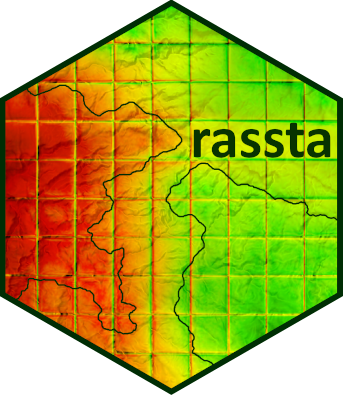

rassta (raster-based spatial stratification algorithms) is a collection of algorithms for the spatial stratification of landscapes, sampling, and modeling of spatially-varying phenomena in R.
rassta offers a simple framework for the stratification of geographic space based on raster layers representing landscape factors and/or factor scales. The stratification process follows a hierarchical approach, which is based on first level units (i.e., classification units) and second-level units (i.e., stratification units). Nonparametric techniques allow to measure the correspondence between the geographic space and the landscape configuration represented by the units. These correspondence metrics are useful to define sampling schemes and to model the spatial variability of environmental phenomena.
Installation
rassta is available from CRAN, so the current released version can be installed as follows:
install.packages("rassta")To install the development version from github, please use:
remotes::install_github("bafuentes/rassta")Acknowledgments
rassta greatly benefits from past and current efforts to make spatial data analysis fully operational in R, which in turn have benefited from titans like GDAL, PROJ, GEOS, etc. Special thanks to the minds behind the terra, rgdal, rgeos, and sf packages, and those behind the packages that rassta depends on as well.
Citation
A journal article describing the analysis and theoretical background of rassta is on its way. In the meantime, if you use rassta as part of your research please cite the EarthArXiv preprint in your work:
B.A. Fuentes, M.J. Dorantes, and J.R. Tipton. rassta: Raster-based Spatial Stratification Algorithms. EarthArXiv, 2021. https://doi.org/10.31223/X50S57